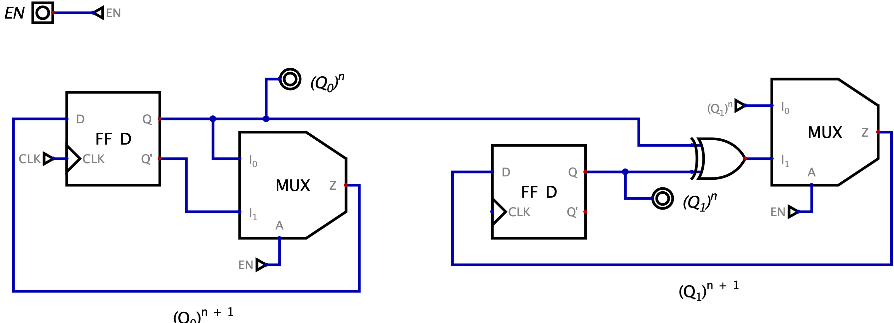
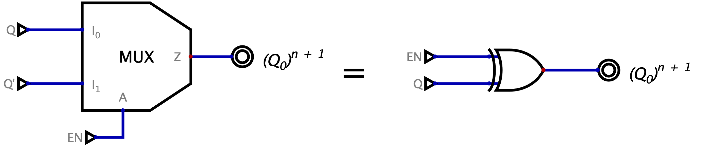
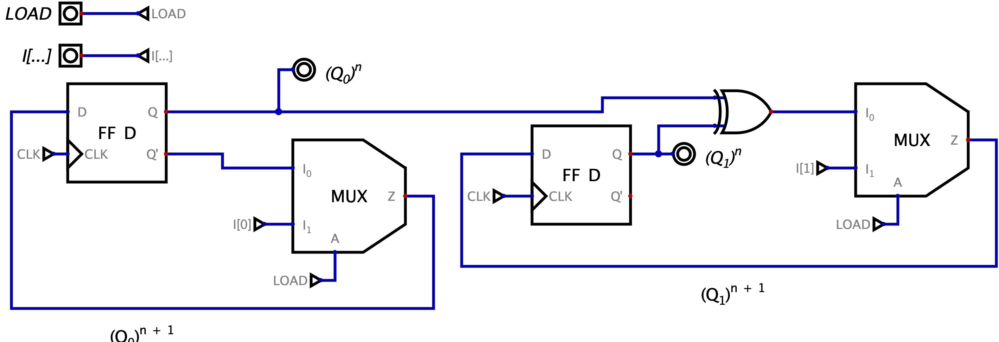
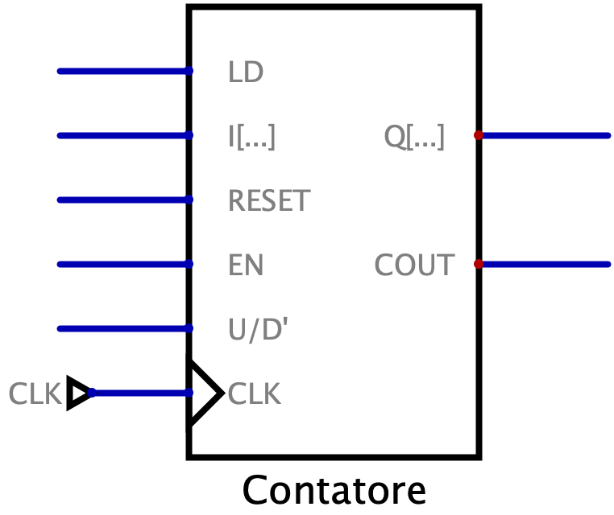
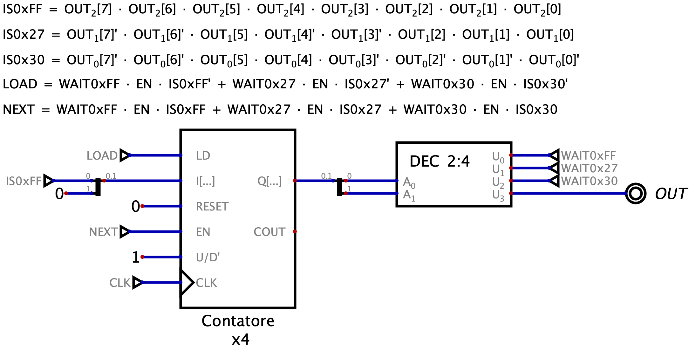

Definizione - Contatore binario senza ingressi x \( 4\)
Per realizzare un contatore binario senza ingressi x
\( 4\)
(ovvero che memorizza
\( 4\)
stati) sono necessari
\( 2\)
bit di stato (ovvero due flip-flop).
Per realizzare la logica di "incremento" è possibile utilizzare un \( n\) bit adder a cui è costantemente aggiunto il numero \( 1\) . Tale realizzazione è però inefficiente, in quanto utilizza un numero elevato di componenti. Un adder, infatti, oltre alla logica di incremento implementa ulteriori funzionalità (come la gestione dell'ingresso riporto e di calcolarlo) mentre, in questo caso, non deve realizzarli.
Osservando la sequenza degli stati (dove con \( n\) si intende l'istante attuale e con \( n + 1\) l'istante successivo)
 è possibile notare che il bit
\( (Q_{0})^{n + 1}\)
non è altro che il NOT del bit
\( (Q_{0})^{n}\)
, mentre il bit
\( (Q_{1})^{n + 1}\)
è dato dallo XOR tra
\( (Q_{1})^{n}\)
e
\( (Q_{0})^{n}\)
.
è possibile notare che il bit
\( (Q_{0})^{n + 1}\)
non è altro che il NOT del bit
\( (Q_{0})^{n}\)
, mentre il bit
\( (Q_{1})^{n + 1}\)
è dato dallo XOR tra
\( (Q_{1})^{n}\)
e
\( (Q_{0})^{n}\)
.
Si ha quindi che la migliore realizzazione è la seguente:
 Esistono diverse realizzazioni di contatori binari, differenti in base alla codifica di memorizzazione utilizzata (ad esempio la codifica Gray) ma anche in base al numero (e al tipo) di ingressi.
Esistono diverse realizzazioni di contatori binari, differenti in base alla codifica di memorizzazione utilizzata (ad esempio la codifica Gray) ma anche in base al numero (e al tipo) di ingressi.
Per realizzare la logica di "incremento" è possibile utilizzare un \( n\) bit adder a cui è costantemente aggiunto il numero \( 1\) . Tale realizzazione è però inefficiente, in quanto utilizza un numero elevato di componenti. Un adder, infatti, oltre alla logica di incremento implementa ulteriori funzionalità (come la gestione dell'ingresso riporto e di calcolarlo) mentre, in questo caso, non deve realizzarli.
Osservando la sequenza degli stati (dove con \( n\) si intende l'istante attuale e con \( n + 1\) l'istante successivo)
Si ha quindi che la migliore realizzazione è la seguente:
Definizione - Contatore binario con ingresso sincrono \( ENABLE\)
Un contatore con ingresso sincrono
\( ENABLE\)
è un contatore che:
Utilizzare tali componenti risulta però inefficiente, in quanto è possibile ottimizzarli:

- con \( ENABLE = 1\) svolge il regolare funzionamento (contando normalmente);
- con \( ENABLE = 0\) rimane costante al valore memorizzato;

-
per il bit
\( (Q_{0})^{n + 1}\)
si ha che può essere così ottimizzato
ovvero è possibile sostituirlo con un gate EXOR che con un ingresso a \( 0\) si comporta come identità rispetto all'altro ingresso mentre, con un bit a \( 1\) si comporta come un NOT.
-
per il bit
\( (Q_{1})^{n + 1}\)
si ha che può essere così ottimizzato
ovvero è possibile aggiungere un gate AND in ingresso. Con \( EN = 1\) esso porta in uscita l'ingresso \( Q_0\) (ovvero si ha il regolare funzionamento) mentre con \( EN = 0\) si ha come uscita dell'AND \( 0\) e il gate EXOR porta in uscita l'altro ingresso (che sarebbe il bit in uscita all'istante precedente).

Definizione - Contatore binario con ingresso sincrono \( RESET\)
Un contatore con ingresso sincrono
\( RESET\)
è un contatore che:

- con \( RESET = 0\) svolge il regolare funzionamento (contando normalmente);
- con \( RESET = 1\) memorizza il valore \( 0\) .
Definizione - Contatore binario con ingresso sincrono \( LOAD\)
Un contatore con ingresso sincrono
\( LOAD\)
è un contatore che:
- con \( LOAD = 0\) svolge il regolare funzionamento (contando normalmente);
- con \( LOAD = 1\) memorizza i bit forniti sull'ingresso \( I[\ldots]\) .

Definizione - Contatore binario con ingresso sincrono \( UP/DOWN'\)
Un contatore con ingresso sincrono
\( UP/DOWN'\)
è un contatore che:
Per realizzarlo è possibile considerare che il bit \( (Q_0)^{n + 1}\) commuta in ogni caso (indipendentemente se incrementa o decrementa) mentre si ha che il bit \( (Q_1)^{n + 1}\) assume il seguente comportamento:

- con \( U/D' = 1\) svolge il regolare funzionamento (incrementando il proprio stato interno);
- con \( U/D' = 0\) decrementa il proprio stato interno.
Per realizzarlo è possibile considerare che il bit \( (Q_0)^{n + 1}\) commuta in ogni caso (indipendentemente se incrementa o decrementa) mentre si ha che il bit \( (Q_1)^{n + 1}\) assume il seguente comportamento:
- nel caso dell'incremento, diventa \( 1\) quando il bit \( (Q_{0})^n = 1\) (in quanto incrementando aggiunge un bit di peso maggiore);
- nel caso del decremento, diventa \( 1\) quando il bit \( (Q_{0})^n = 0\) (in quanto decrementando è necessario diminuire il bit di peso maggiore);
Definizione - Contatore binario senza ingressi x \( 8\)
Per realizzare un contatore binario senza ingressi x
\( 8\)
(ovvero che memorizza
\( 8\)
stati) è sufficiente calcolare il bit
\( (Q_2)^{n+1}\)
. Tale bit commuterà solo quando
\( (Q_0)^n = 1\)
e
\( (Q_1)^n = 1\)
, ovvero quando
\( (Q_0)^n \cdot (Q_1)^n\)
.
È quindi sufficiente replicare la logica utilizzata per il bit \( (Q_1)^{n + 1}\) (ovvero si ha che uno EXOR con ingresso \( 1\) commuta l'altro ingresso) fornendo in input ad un EXOR gli ingressi \( ((Q_0)^n \cdot (Q_1)^n)\) e \( (Q_2)^n\) , ovvero

È quindi sufficiente replicare la logica utilizzata per il bit \( (Q_1)^{n + 1}\) (ovvero si ha che uno EXOR con ingresso \( 1\) commuta l'altro ingresso) fornendo in input ad un EXOR gli ingressi \( ((Q_0)^n \cdot (Q_1)^n)\) e \( (Q_2)^n\) , ovvero
Definizione - Contatore binario
Un Contatore x
\( (2^{k})\)
è una rete logica sincrona in grado di contare ad ogni ciclo di clock fino a raggiungere il valore
\( 2^{k} - 1\)
(o
\( 0\)
nel caso lo si utilizzi con
\( U/D' = 0\)
).
I possibili ingressi di questo componente sono:
 L'ingresso
\( EN\)
dei contatori "a valle" deve essere condizionato anche dall'ingresso
\( ENABLE\)
della rete oltre che dall'ingresso
\( COUT\)
, in modo da evitare problemi nel caso il contatore si fermi una volta raggiunto "il limite".
L'ingresso
\( EN\)
dei contatori "a valle" deve essere condizionato anche dall'ingresso
\( ENABLE\)
della rete oltre che dall'ingresso
\( COUT\)
, in modo da evitare problemi nel caso il contatore si fermi una volta raggiunto "il limite".
Può essere tuttavia necessario un contatore che conta fino ad un numero che non è una potenza di \( 2\) : per fare questo è sufficiente calcolare un segnale \( TO_RESET\) da collegare all'ingresso \( RESET\) del contatore (condizionato ulteriormente dall'ingresso \( ENABLE\) ). Tale segnale sarà un mintermine nel caso si voglia discriminare un "numero maggiore o uguale di" mentre sarà un maxtermine nel caso si voglia discriminare un numero "minore o uguale di". Ad esempio, per creare un contatore x \( 20\) si avrà la seguente rete:


- un ingresso \( CLK\) per il segnale di clock;
- un ingresso sincrono \( LD\) che permette di caricare tutti i \( k\) bit forniti nell'ingresso \( I[\ldots]\) ;
- un bus di \( k\) segnali sincroni in ingresso \( I[k - 1, \ldots, 0]\) ;
- un ingresso sicrono \( RESET\) che forza lo stato \( 0\) ;
- un ingresso sincrono \( EN\) che attiva/disattiva il contatore;
- un ingresso sincrono \( U/D'\) ("Up / Down'") che consente di scegliere tra incrementare e decrementare lo stato;
- un bus di \( k\) segnali sincroni in uscita \( Q[...]\) che forniscono lo stato corrente;
- un segnale sincrono \( COUT\) che indica se il contatore ha raggiunto lo stato limite (quindi \( 2^k - 1\) se \( U/D'=1\) o \( 0\) se \( U/D'=0\) ).
Può essere tuttavia necessario un contatore che conta fino ad un numero che non è una potenza di \( 2\) : per fare questo è sufficiente calcolare un segnale \( TO_RESET\) da collegare all'ingresso \( RESET\) del contatore (condizionato ulteriormente dall'ingresso \( ENABLE\) ). Tale segnale sarà un mintermine nel caso si voglia discriminare un "numero maggiore o uguale di" mentre sarà un maxtermine nel caso si voglia discriminare un numero "minore o uguale di". Ad esempio, per creare un contatore x \( 20\) si avrà la seguente rete:
Esempio - Sintesi diretta - Riconoscitore di sequenze con contatore
Progettare una rete sequenziale sincrona che controlla se gli ultimi tre byte inseriti nell'ingresso
\( IN[7, \ldots, 0]\)
mentre il segnale
\( EN = 1\)
sono stati
\( FF)_{16}\)
,
\( 27)_{16}\)
e
\( 30)_{16}\)
(dove
\( FF)_{16}\)
è il primo byte della sequenza).
Nel caso la sequenza sia rispettata, nel periodo di clock successivo l'uscita \( OUT\) deve essere portata a \( 1\) e rimanere tale fino a che l'ingresso asincrono \( A\_RESET\) non è uguale a \( 1\) : da quel momento la rete deve considerare che non fosse stato inserito alcun byte.
Innanzitutto la rete è di Moore in quanto deve rispondere al clock successivo all'ultimo inserimento nella sequenza.
Un modo per riconoscere sequenze secondo Moore è porre un contatore che indica in che stato si è.
Tale contatore sarà comandato dall'ingresso \( NEXT\) che sarà attivo solo se \( EN = 1\) , si sta aspettando un certo valore ( \( WAIT0x??\) ) e l'ultimo ingresso è proprio quel valore ( \( WAIT0x??\) ). Analogamente, si avrà che il contatore deve essere resettato solo se ci si aspetta qualcosa di diverso dall'ultimo ingresso. Inoltre, il contatore sarà inizializzato in stato \( WAIT0x27\) nel caso l'ultimo ingresso sia stato \( 0xFF\) , altrimenti sarà inizializzato a \( WAIT0xFF\) .
Nel caso la sequenza sia rispettata, nel periodo di clock successivo l'uscita \( OUT\) deve essere portata a \( 1\) e rimanere tale fino a che l'ingresso asincrono \( A\_RESET\) non è uguale a \( 1\) : da quel momento la rete deve considerare che non fosse stato inserito alcun byte.
Innanzitutto la rete è di Moore in quanto deve rispondere al clock successivo all'ultimo inserimento nella sequenza.
Un modo per riconoscere sequenze secondo Moore è porre un contatore che indica in che stato si è.
Tale contatore sarà comandato dall'ingresso \( NEXT\) che sarà attivo solo se \( EN = 1\) , si sta aspettando un certo valore ( \( WAIT0x??\) ) e l'ultimo ingresso è proprio quel valore ( \( WAIT0x??\) ). Analogamente, si avrà che il contatore deve essere resettato solo se ci si aspetta qualcosa di diverso dall'ultimo ingresso. Inoltre, il contatore sarà inizializzato in stato \( WAIT0x27\) nel caso l'ultimo ingresso sia stato \( 0xFF\) , altrimenti sarà inizializzato a \( WAIT0xFF\) .
